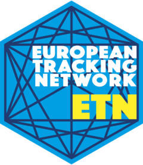

List all available animal project codes
Source:R/list_animal_project_codes.R
list_animal_project_codes.RdList all available animal project codes
![[Deprecated]](figures/lifecycle-deprecated.svg)
Examples
list_animal_project_codes()
#> [1] "2004_Gudena" "2010_phd_reubens"
#> [3] "2010_phd_reubens_sync" "2011_Loire"
#> [5] "2011_rivierprik" "2011_Warnow"
#> [7] "2012_leopoldkanaal" "2013_albertkanaal"
#> [9] "2013_Foyle" "2014_demer"
#> [11] "2014_Frome" "2014_Nene"
#> [13] "2015_Albertkanaal_VPS_Ham" "2015_dijle"
#> [15] "2015_fint" "2015_homarus"
#> [17] "2015_PhD_Gutmann_Roberts" "2015_phd_verhelst_cod"
#> [19] "2015_phd_verhelst_eel" "2016_Albertkanaal_VPS_Ham"
#> [21] "2016_Diaccia_Botrona" "2016_phd_vergeynst"
#> [23] "2017_Albertkanaal_VPS_Ham" "2017_Fremur"
#> [25] "2017_Iller" "2018_EC"
#> [27] "2018_flapperskate" "2018_Iller_VPS"
#> [29] "2019_Grotenete" "2019_Lake_Anundsjo_VPS"
#> [31] "2020_Gudena" "2020_PhD_Winter"
#> [33] "2021_Dijle_VPS" "2021_flapperskate"
#> [35] "2021_Gudena" "2021_transcal"
#> [37] "2021_YEELAZ" "2022_Albertkanaal_VPS_Hasselt"
#> [39] "2022_Beaver_Durme" "2022_SEELAZ"
#> [41] "2023_european_eel_meuse" "2023_WaddenSea_YellowEel"
#> [43] "2023_wels_catfish_meuse" "2024_allis_shad_rhine"
#> [45] "2024_Anguilla_bb_Harlingen" "2024_BECO_IIM_BELAS"
#> [47] "2024_dvw_fish_migration" "2025_anguilla_volkerak_animals"
#> [49] "2025_IJmuidenRotterdam_SeaBass" "2025_langsdammen_animals"
#> [51] "2025_Nederrijn_Lek_animals" "2025_NorthSeaCanal_Seatrout"
#> [53] "2025_PHD_MONET" "2025-2026_RijnWest_SilverEel"
#> [55] "2025-28_NorthSeaNL_MONS_Elasmo" "2026_PhD_Visser_animals"
#> [57] "2026-7_Solent_Seascape" "aagone_study_aude_animals"
#> [59] "Aberdeen" "ADST-Shark"
#> [61] "AFICHE" "Allis_shad_migration_Oise_2024"
#> [63] "amsterdam" "anja_phd"
#> [65] "ARAISOLA02" "ARAISOLA03"
#> [67] "Ars" "Artevigo"
#> [69] "ASMOP1" "ASMOP2"
#> [71] "AZO" "BALANCE"
#> [73] "Baltic_Sturgeon_Restoration" "BECORV"
#> [75] "BEM" "BFT-2025-IPMA-IFAPA-TUNIPEX"
#> [77] "BFTDK" "BGDanubeSturgeons"
#> [79] "BlueCrab" "BlueCrab2022Algarve"
#> [81] "Bluesharks_Basque" "Bodden_Pike"
#> [83] "brackishwater_perch" "brackishwater_pike"
#> [85] "Brasem_IJM_MM" "BristolChannelSalmon"
#> [87] "BristolChannelSeaTrout" "BristolChannelShad"
#> [89] "BristolChannelSkate" "BristolChannelTope"
#> [91] "BSTN_FISH_VFM" "BTN"
#> [93] "BTN_BOATS_animals" "BTN_LOST"
#> [95] "BTN-DeepWater-IMEDEA" "BTN-IMEDEA"
#> [97] "Bush_salmon_NorthernIreland" "CABECOU"
#> [99] "CANAPE" "Carlingford_Animals"
#> [101] "Carp_Markermeer" "CESB"
#> [103] "CMAX_Hebrides" "cod_dtu"
#> [105] "COD_OG_DK_2023" "COD_OWF"
#> [107] "COD_OWF_range_test" "Cod-connectivity"
#> [109] "codnoise" "COLAGANG"
#> [111] "CONNECT-MED" "Conon"
#> [113] "COREMAR" "CORYTRACK"
#> [115] "Crab_behavior_aquaculture_Norw" "Csapidus_Southern_France"
#> [117] "CTN" "DAbecasis_PhD"
#> [119] "DAERA_Elasmobranch_Tagging" "DAK"
#> [121] "Danube_Sturgeons" "DEHINC.HABI.GUACETO"
#> [123] "Delfzijl" "Deveron"
#> [125] "drentscheaa" "driederfzijlen"
#> [127] "DSM" "DSSM"
#> [129] "DuskMaro" "Duurswold"
#> [131] "EBAMAR" "Eel_behaviour_enclosure_lagoon"
#> [133] "Eel_behaviour_portarea_lagoon" "Eel_HighRhine_26-29"
#> [135] "Eel_migration_Latvia_2024" "Eel_migration_Test_2023"
#> [137] "Eel_scapement_Orbetello_lagoon" "Eel-source-to-sea"
#> [139] "eemskanaal_I" "eemskanaal_II"
#> [141] "eemskanaal_III" "EMERGE_Banyuls_2025_2027"
#> [143] "EMFish_test" "EMMN"
#> [145] "ESGL" "ETN_animal_project_group_1"
#> [147] "ETN_animal_project_group_2" "ETN_animal_project_group_3"
#> [149] "ETN_animal_project_group_4" "ETN_animal_project_group_5"
#> [151] "ETN_animal_project_group_6" "ETN_animal_project_group_7"
#> [153] "ETN_animal_project_group_8" "ETN_animal_project_group_9"
#> [155] "FarmTrack_animal" "Finescale_Helgoland"
#> [157] "Fish_Mig_Wad_Sea" "FISHGAL"
#> [159] "FISHINTEL" "FISHOWF"
#> [161] "FISHOWF+" "FISP"
#> [163] "flatfish" "FpassZALESA_20_21"
#> [165] "Friesland" "Gamerwolde"
#> [167] "garfish_dtu" "GEPESCART2"
#> [169] "GIBRALTRACK_pilot" "Grey_Mullet"
#> [171] "GuitarProtect_animal" "Hevring_Trout_Denmark"
#> [173] "HR2_3D_tracking_eel_reservoir" "hunze_eel"
#> [175] "hunzeenaas" "Hvalfjordur"
#> [177] "IBASS" "ICCAT_BFT"
#> [179] "ICOD_animals" "IG_II_Fish_Pass"
#> [181] "IMR_OWF_animals" "Inforbiomares"
#> [183] "IOA" "Jersey_Coastal"
#> [185] "JSATS-PalmaBay-2019" "KBTN_FISH"
#> [187] "KERG" "kornwerderzand"
#> [189] "KRK" "Lake_Hopid"
#> [191] "Lake_Thingvallavatn" "LamTre20_21"
#> [193] "LamYorOus18-20" "LargeMigrants2023-2026"
#> [195] "lauwersmeer" "LBSSM"
#> [197] "LESPUR" "life4fish"
#> [199] "Limfjord" "LionFishMED"
#> [201] "LOUYETU" "Lumpfish"
#> [203] "lumpfish_dtu" "MacFish"
#> [205] "mackerel_dtu" "mackerel_geomar"
#> [207] "mackerel_ifremer" "mackerel_vliz"
#> [209] "Mangar-Keban" "Mapping_Algarve_Sharks"
#> [211] "Marble" "Marble_rainbow_trout"
#> [213] "MariagerFjord_2008_2009" "MBA_Massmo"
#> [215] "MBA_Wavehub" "MBA_Whitsand"
#> [217] "Mecklenburg_fish_movements" "MedBycatch"
#> [219] "mepnsw_animals" "MERMOZ"
#> [221] "MI_ClewBay_Achill_animal" "MICHIMIT"
#> [223] "MIGRATOEBRE" "MMERMAID"
#> [225] "Mobula_IMAR" "MOPP"
#> [227] "MorayFirth" "MOS"
#> [229] "MOVE_CCMAR_ANIMALS" "MustelusAsterias_NEA"
#> [231] "NAAT" "NARVAEEL"
#> [233] "NETFISH_ANIMALS" "Noordzeekanaal"
#> [235] "nortrack_ifremer" "NTNU-Gaulosen"
#> [237] "OP-Test" "Orstedcod"
#> [239] "OTN-Hemnfjorden" "OTN-Skjerstadfjorden"
#> [241] "OTN-Tosenfjorden" "paintedcomber"
#> [243] "pc4c" "PelFish"
#> [245] "Perchtrack" "PhD_Barbara_Koeck"
#> [247] "PhD_Goossens" "PhD_Jeremy_Pastor"
#> [249] "PhD_JolienBuyse" "PhD_Marrocco"
#> [251] "PhD_Nolan" "PhysFish"
#> [253] "PLASTIBE" "Porbeagle_migration_scot_2024"
#> [255] "Porbeagles_Europe" "PrePARED"
#> [257] "PTN_ATLAZUL_rays" "PTN_MEROSW2021_duskygrouper"
#> [259] "PTN_MIGRACORV_MEAGRE" "PTN_PROTECT2012_whiteseabream"
#> [261] "PTN_PROTECT2013_Conger" "PTN_PROTECT2013_Moray"
#> [263] "PTN-MARSW-dusky-grouper" "PTN-Silver-eel-Mondego"
#> [265] "RAJIBAL-COFIB" "rangetest"
#> [267] "RASST" "RATJADA"
#> [269] "rays_dtu" "rays_vliz"
#> [271] "RBVV2" "RECCRU_animals"
#> [273] "Reelease" "REFUGI"
#> [275] "ResMed" "Rijke_Noordzee"
#> [277] "River_Ellidaar" "River_Litlaa"
#> [279] "RNP" "rt2020_zeeschelde"
#> [281] "RTT" "Running_eel"
#> [283] "Saimaa_Arctic_Char_2023" "Salmo_Migration_NSIC"
#> [285] "Salmon_migration_UK" "SAMARCH"
#> [287] "SARTELARAM" "SARTELTG"
#> [289] "SARTELZINGARO" "Scytrack"
#> [291] "seabass_2026_vliz" "SEAMONITOR_STRAITS_animals"
#> [293] "SEM_animals" "SEMP"
#> [295] "severn_multi_species_animals" "shad_scheldt_dst"
#> [297] "Shark_Levant_tracking" "sharks_dtu"
#> [299] "sharks_vliz" "SIARC_ANIMALS"
#> [301] "Siganid_East_Med" "Siganid_Gulf_Aqaba"
#> [303] "SkagNor" "Skye"
#> [305] "SMAFBI" "SmartBay_animals"
#> [307] "SMLA" "smoltrack_salmon_dtu"
#> [309] "SMOLTRACK-I-Engeland" "SMOLTRACK-II-Engeland"
#> [311] "SMOLTRACK-Skjern-2017" "SMUCC"
#> [313] "SMUOG" "SPAWNSEIS"
#> [315] "SPICARA_animal" "SPIDER_GNB_animals"
#> [317] "SrivAqab" "SrivEMed"
#> [319] "ST08SWE" "STRAITS_GIBRALTAR_ANIMAL"
#> [321] "STRAITS_TSTN_animals" "Sturgeon_reintroduction_Ebre"
#> [323] "Sturgeon_Rhine_Meuse_Delta" "sturgeonSK"
#> [325] "STURNETGEBZE" "SU.MO.ELASMO.Adriatic"
#> [327] "Sudle_IMPULS" "Sudle_INNOV"
#> [329] "super_smolts" "SUPERSAT"
#> [331] "SVALBARD_NICE" "SVNL-FISH-WATCH"
#> [333] "SVNL-WS" "SW_Oude_Ijssel"
#> [335] "SWIMWAY_2021" "Swimway_vechte"
#> [337] "Swiss_AcTel" "SWRL_animals"
#> [339] "TelePomiMer_animals" "TELETRUTTA"
#> [341] "TelMarsw" "TeRi"
#> [343] "test_LP" "TRACE_animals"
#> [345] "Trout_movement_Skye_2021-2023" "TROUTTRACK"
#> [347] "UseIT_BlueCrab_Tracking" "UtS"
#> [349] "V2LBEIAR" "V2LCASP"
#> [351] "V2LCHASES" "V2LDBS"
#> [353] "V2LFALK" "v2lgac"
#> [355] "V2LGOL" "V2LIMFSTP"
#> [357] "V2LLIMS" "V2LNR"
#> [359] "V2LSMQUB" "v2ltrod"
#> [361] "VFM_BFT" "VFM_HHCOD"
#> [363] "VFM_SpinyDogfish" "VFM_SSCS"
#> [365] "VFM_Sturgeon" "VFM_ThornbackRay"
#> [367] "VFM_TnTEel" "VFMLNU_Osby_animals"
#> [369] "VMLSMMI" "VMLSOCBS"
#> [371] "VVV" "Walloneel"
#> [373] "WCTP_animals" "Winde_Tjeukemeer"
#> [375] "ZCH" "ZRM_animals"